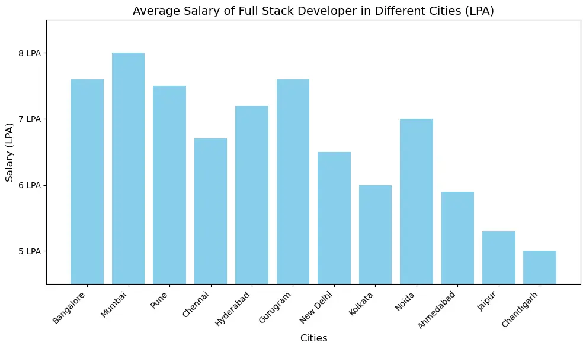
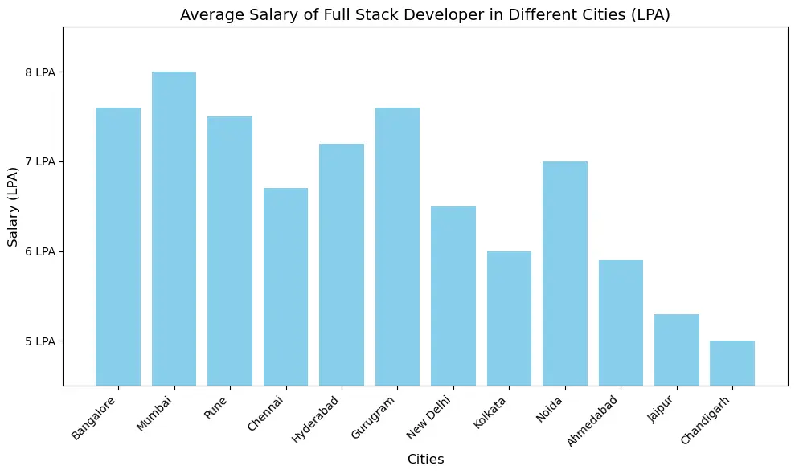

Full Stack Web Development (JAVA)
Start Building In-Demand Tech Skills and Land a Software Developer Job
Batch Start From:
-
25.09.2024
-
Online & Offline
-
12.00 PM
Land lucrative offers with an average salary of ₹6.7 Lakhs per year.
By providing your contact details, you agree to our Terms of Use & Privacy Policy.
About the Program
Dive into our Java Full Stack Web Development course at TAP Academy, where you'll master
Java programming alongside front-end and
back-end frameworks, preparing you for a career in dynamic web development.
Everything You Need To Know About Full Stack Web Development (JAVA)

 Learn Java fundamentals alongside HTML, CSS, and JavaScript basics.
Learn Java fundamentals alongside HTML, CSS, and JavaScript basics.
Master OOP concepts and the Collections Framework.
Explore advanced Java, Spring, Hibernate, JDBC, JEE.
Apply your knowledge and skills by working on live projects.
Full Stack Web Development (JAVA)
Dive into our Java Full Stack Web Development course at TAP Academy, where you'll master
Java programming alongside front-end and
back-end frameworks, preparing you for a career in dynamic web development.

Data Structures and Algorithms
The Data Structures and Algorithms (DSA) course is a comprehensive program
designed to build a solid foundation in computational problem-solving.
With all classes delivered through cutting-edge AR technology, you'll enjoy
an interactive and engaging learning experience that bridges theory with
real-world application.
 Best-In-Class Training
Best-In-Class Training
 24/7 LMS Access
24/7 LMS Access
 24/7 Support
24/7 Support
Explore bit manipulation, recursion, arrays, and matrices.
Learn linked lists (singly, doubly, and circular), stacks, and queues.
Delve into tree data structures and dynamic programming.
Experience all classes through immersive AR technology.
1.Learning Methodologies
Getting Started:
 Core Java
Core Java
Foundational concepts,
object-oriented principles, and essential programming skills for robust application development.
Daseboard fundamental
Teaches the basics of SQL,
data modeling, and database management for efficient data handling.
Aptitude Training
Enhances problem-solving
skills with exercises in logic, mathematics, and analytical reasoning for improved performance.
Soft Skills Development
Focuses on communication,
teamwork, and professional skills to enhance workplace effectiveness and career growth.
Building Skills:
Advanced programming
Complex problem-solving
techniques with a focus on loops, arrays, strings, and collections for efficient coding.
Front-End Technologies
Creation of dynamic, responsive
user interfaces using HTML, CSS, and JavaScript for engaging web experiences.
Module based Projects
Developing distinct project
components, integrating them for a cohesive, fully functional application.
Weekly Assessments and Mocks
Provide regular testing and
practice to evaluate progress and prepare for real-world challenges.
Mastering Development:
JDBC & JEE
Focus on database
connectivity and building scalable, enterprise-level applications using Java's advanced frameworks and APIs.
Frameworks
Frameworks cover key
tools and libraries like Spring and Hibernate for efficient Java development.
Capstone Project
Applies all skills to create
a real-world application, showcasing your expertise and practical knowledge.
2.Milestone - Timeline
- Live Class
- Daily Assignment
- Weekly Assessments and Mocks
- SoftSkill & Aptitude
- Module Based Projects
- Capstone Projects
- Industry Mentorship
- Interview Preparation
- Start Your Career
3.What Will You Learn?
Core Java
This course covers the theoretical foundations of Java, including its history, key features, and object-oriented
principles like
encapsulation, inheritance, polymorphism, and abstraction. You will also learn about platform independence, JVM, memory management,
data types,
operators, exception handling, and multithreading, building a strong base for practical Java programming.
Programming
This Java programming course enhances problem-solving and logical thinking skills through 500+ coding challenges.
You'll develop
the ability to tackle complex problems
and refine your critical thinking, laying a strong foundation for advanced software development.
MYSQL
The objective of the SQL course is to equip learners with a solid understanding
of managing and manipulating relational databases using SQL.
It focuses on
performing key operations such as querying, updating, inserting, and deleting data, as well as managing database structures
like tables,
views, and indexes. The course aims to enable efficient
and effective database interaction for data storage, retrieval, and management.
HTML, CSS & JS
By completing the HTML, CSS, and JavaScript course, you'll gain a solid understanding of these foundational web technologies.
You'll learn
to create structured, visually appealing, and interactive web pages using HTML for content, CSS for styling,
and basic JavaScript for functionality.
This course will equip you with the skills to design responsive and
accessible websites, providing a strong foundation for future web development projects.
Advance Java
Advance your Java skills by mastering JDBC for seamless database interaction, JEE for scalable enterprise applications,
and JSP for dynamic
web content generation. These core technologies enable developers to create robust, efficient Java-based
solutions. JDBC allows easy data manipulation,
JEE provides enterprise-level scalability, and JSP enhances user experiences
with dynamic web pages. Together, they form the foundation of modern
Java web development,
unlocking endless possibilities for building sophisticated applications. Embrace Advanced Java to elevate your software
development capabilities.
Framework
In the Hibernate course, gain expertise in object-relational mapping (ORM) to streamline database interactions, manage
object
persistence, and enhance performance. Learn to integrate Hibernate into Java projects, enabling the creation of
robust and maintainable database-driven
applications. Master the Spring framework, a powerful tool for building scalable
Java applications with features like dependency injection and
aspect-oriented programming, simplifying development and maintenance.
Aptitude
In the Aptitude course, you'll develop essential problem-solving skills and logical thinking abilities, focusing on
quantitative, logical
reasoning,
and verbal aptitude. Through practical exercises, you will learn to approach complex problems systematically,
enhancing your analytical thinking
and decision-making. This course equips you with the tools to excel in competitive exams,
technical assessments, and job interviews, providing a
strong foundation for your professional success.
DSA
In the Data Structures and Algorithms course, you'll master key concepts and techniques essential for efficient
problem-solving in Java. You'll
gain hands-on experience with various data structures and algorithms, enabling you
to design optimized solutions for complex problems. This course
equips you with the skills to build scalable, high-performance
software systems, preparing you to confidently handle diverse programming challenges.
4.Certification

What are the prerequisites for this course?
This course has no prerequisites—designed to teach everything from the ground up, making it accessible for beginners in
programming and web
development.
What kind of projects will we build?
In this course, you'll build advanced web applications, including a portfolio website, LinkedIn clone,
e-commerce site, and food delivery system.
Is this course available online or offline, and what is its duration?
We offer both online and offline options for this course, with a duration of 5 to 6 months.
Is this course suitable for beginners?
Yes, the course starts with the basics and gradually progresses to advanced topics.
5.Tools You Will Learn


6.Capstone Projects
In our Full Stack Web Developer course, you'll engage in a range of projects including a portfolio website,
linkedIn clone, e-commerce
application, and food delivery system. These projects utilize HTML, CSS, JavaScript, Java, MySQL, Spring, and Hibernate,
offering practical
experience in developing sophisticated web applications from front-end to back-end.
Portfolio Website
 Linkedin Clone
Linkedin Clone
 E-Commerce Web Application
E-Commerce Web Application
 Food Delivery Web Application
Food Delivery Web Application
Your Career in Full Stack Web Development (JAVA)

 

Career Growth Strories
Tap Academy provides unlimited job opportunities, ensuring every student has access to a broad range of career paths.
With AR Tech Training
that has empowered over 11,000+ students, we support your journey to professional success.

A Unity of Tap Ed Tech Private Limited.
Useful links
- Home
- Students Reviews
- Hire Form Us
- Contact Us
Course List
- Full Stack Web Development (JAVA)
- Data Structures and Algorithms
Follow Us


Copyright 2024 | Tap Academy
Privacy Policy Terms & Conditions
Refunds / Cancellations